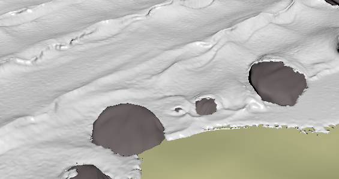
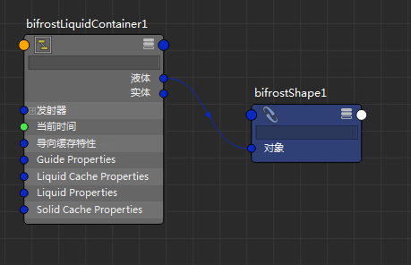

尽管粒子显示和诊断颜色设置对于预览 Bifrost 模拟的某些方面非常有用，但却不利于很好地了解流体的曲面细节。若要更好地查看曲面，您可以调整形状对象上的一些显示选项。

也可以在体素化之后使用 Bifrost 形状查看碰撞对象和导向的曲面。这有助于诊断碰撞不精确等问题，通过调整碰撞对象的“转化”(Conversion)特性（例如，通过将“模式”(Mode)设置为“实体(稳健)”(Solid (Robust))）可修复该问题。
查看液体曲面
- 在液体形状的“显示”(Display)属性组中，启用“体素”(Voxels)。
- 或者，禁用“粒子”(Particles)。
- 在“体素显示”(Voxel Display)属性组中，启用“诊断颜色”(Diagnostic Color)。
查看碰撞对象或导向曲面
- 在“节点编辑器”(Node Editor)中显示主容器节点。
有关使用“节点编辑器”(Node Editor)的常规详细信息，请参见使用节点编辑器创建节点网络。
- 将 bifrostShape 节点添加到图表。
- 将容器的“实体”(Solid)（对于碰撞对象）或“导向”(Guide)输出连接到形状的“对象”(Object)输入。

- 在形状的“显示”(Display)属性组中，启用“体素”(Voxels)。
- （可选）为形状指定所选的着色器。